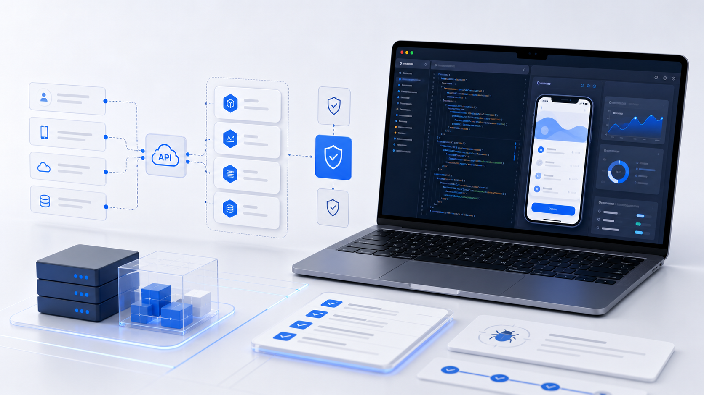

围绕 iOS App 和企业移动端工具，处理界面、业务流程、接口联调和测试交付。
About
一家专注软件开发交付的小型技术公司
公司主要围绕移动应用、网络与信息安全软件、人工智能应用软件、数据处理与存储支持、技术咨询等方向开展业务。
我们更重视需求清晰、接口稳定、交付可维护。对于 iOS App 项目，会从产品结构、账号体系、数据接口、隐私合规和上线准备等环节提供开发支持。
支持数据处理、存储同步、后台接口、权限逻辑和业务系统配套开发。
整理构建、版本、隐私说明、问题修复和后续维护所需的基础资料。

Delivery
从移动端界面到后台接口，围绕真实交付推进。
适合需要 iOS App、数据看板、业务接口和权限模块配合完成的项目。页面展示可以精简，底层逻辑和交付说明要清楚。
Services
服务能力
根据项目阶段提供从方案梳理到开发交付的技术支持。
iOS App 开发
支持原生 iOS 应用、业务功能模块、接口联调、测试修复与上线前准备。
企业移动应用
面向内部管理、数据采集、客户服务等场景，开发轻量可靠的移动端工具。
数据处理与存储
提供数据结构设计、接口对接、同步流程和基础数据处理能力建设。
网络与信息安全软件
围绕账号权限、数据传输、日志记录和安全策略做基础软件开发支持。
AI 应用软件
根据业务场景接入智能识别、文本处理、流程辅助等应用软件功能。
技术咨询与外包
为已有项目提供技术评估、功能拆分、开发排期、版本维护和外包交付。
Workflow
开发流程
- 需求确认 明确功能范围、用户角色、数据来源和上线目标。
- 方案设计 整理页面结构、接口清单、权限逻辑和隐私合规要点。
- 开发联调 按模块推进开发，持续测试核心流程与异常状态。
- 交付维护 提供构建包、说明文档、问题修复和后续版本支持。
Directions
项目方向
适合边界清楚、需要稳定交付的软件项目。
项目可以从需求文档、原型、接口资料或已有系统开始，我们按阶段梳理可开发内容。
移动端业务系统
适用于业务办理、信息采集、客户服务、内部协同等场景。
数据类应用
适用于数据录入、查询、统计、同步和可视化展示。
安全与权限模块
适用于账号体系、访问控制、日志记录和安全策略集成。
软件外包开发
适用于已有需求文档、原型或接口条件下的阶段性交付。
Contact
欢迎沟通 iOS App 或企业软件开发需求。
请在邮件中简要说明项目类型、当前阶段、预期平台和需要支持的内容。